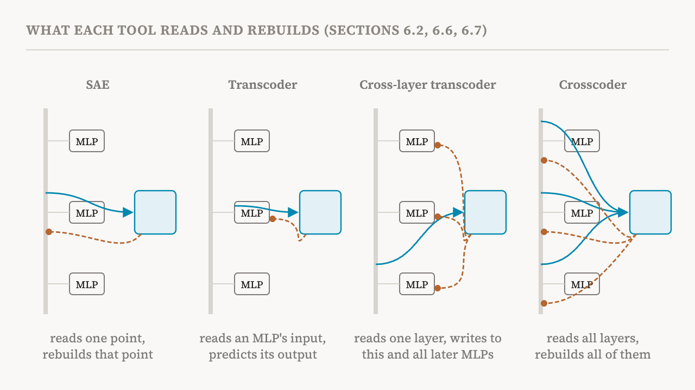
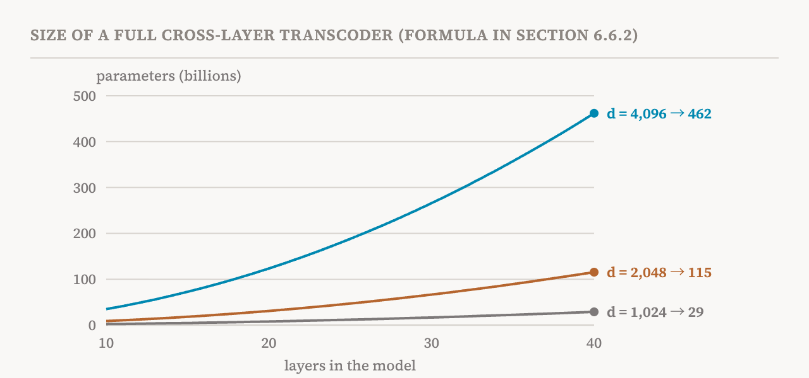

The sparse autoencoders of parts 10 to 12 take a snapshot. They read the activation at one place in one layer and decompose it. But a model computes by passing information up through dozens of layers, and part 6's circuits are about exactly that flow. This part covers sections 6.6 and 6.7 of the book (pages 41–47), on three tools that extract features across layers. It is the most technical part so far, and also the one that leads most directly to the circuit-tracing methods of part 17.
Transcoders: explaining the MLP itself
A standard SAE explains an activation. It does not explain the computation that produced it, such as what an MLP does to turn its input into its output. A transcoder applies dictionary learning to that mapping instead.
It works like an SAE with one change. The encoder reads the MLP's input, before the nonlinearity, and turns it into sparse feature activations. The decoder then predicts the MLP's output, after the nonlinearity, from those features. Training minimises the error between the predicted and the real output, plus a sparsity penalty. The features a transcoder learns are therefore features of the transformation: each says, in effect, "when this pattern is in the input, the MLP adds that to the output".
The book's guidance is that SAEs, which decompose fixed activations, often suffice for the residual stream, while transcoders are essential for analysing MLP layers, because they track how features come out of the MLP's input. A 2025 study reported that transcoders compare favourably with SAEs for interpretability.
Cross-layer transcoders
A cross-layer transcoder (CLT) extends the idea across the whole depth of the model. At each layer, it reads sparse features from the residual stream, using a JumpReLU activation from part 11. Then each feature can write not only to the MLP output of its own layer but to the MLP outputs of every later layer, through separate decoder vectors for each. The reconstructed MLP output at any layer is the sum of what all features from that layer and earlier ones write into it. All layers are trained together.
Why bother? Because in a real model a feature computed in layer 5 may still be needed in layer 20. With per-layer tools, the same information has to be found again, under a new feature, at every layer it passes through. A CLT lets a feature reach the later layers directly, so circuits do not need to re-encode the same thing over and over.
Replacement models
The key idea the book draws from CLTs is the replacement model: a version of the original model in which every MLP layer is replaced by its CLT reconstruction. To run it, you compute the CLT features at each layer, replace each MLP's output with the reconstruction built from the features of that layer and earlier ones, and keep the attention layers unchanged.
To study one particular prompt, researchers go a step further and build a local replacement model. They freeze the original model's attention patterns and normalisation statistics from its run on that prompt, and add a correction term at each layer for whatever the CLT failed to reconstruct. Under those conditions the local replacement model matches the original's activations on that prompt exactly, while expressing them in terms of interpretable CLT features.
When the MLPs are replaced outright, without those corrections, the match is much weaker. In the 2025 study that introduced the method, on a fairly small 18-layer model, the replacement model's most likely next token agreed with the original model's on only about 50% of prompts from a standard text dataset.

The book's warnings about fidelity
Fidelity here means how faithfully the replacement reproduces the original. The book sets out its caveats in a box of their own, which is worth following closely because CLT-based results have attracted a lot of attention.
Conditions behind the reported fidelity: results come mainly from toy or small models, and whether they hold for other families such as Llama or Qwen, or at sizes like 70 billion parameters, is little explored. Fidelity was measured on short sequences similar to the CLT's training data, not under distribution shift. And the headline number is agreement on the single most likely token, while softer measures, such as agreement on the top five tokens or the difference between whole probability distributions, may show a different picture.
Conditions behind the exact local match: attention patterns must be frozen from the original run, because the CLT does not model attention at all; normalisation statistics must be copied from the original model; and correction terms must be added at every layer. Without them, exact matching fails.
Factors that affect fidelity: larger CLTs seem to reconstruct better and give more interpretable features, though systematic studies of scale are limited. Middle layers usually reconstruct better than early layers, which are tied closely to the input, and late layers, which are tied closely to the output. And fidelity is higher for recalling facts and for grammar than for complex reasoning or arithmetic, where the MLPs' computations may be too complex for sparse linear features.
None of this makes CLTs useless, the book stresses. It means that fidelity should be checked on the specific model and task before strong conclusions are drawn from a CLT-based circuit.
Why CLTs make circuits easier
CLTs offer two advantages for circuit analysis. First, they show direct interactions between features across layers: a feature in one layer influences features in later layers through its contribution to their inputs. Second, once the MLPs are replaced and attention and normalisation are frozen, the remaining computation is approximately linear. That makes attribution principled: each feature's activation can be written as the sum of the contributions arriving from earlier features, up to its threshold. Part 17 shows how this is turned into attribution graphs.
But the book lists the assumptions this rests on. Freezing attention treats it as a fixed routing of information rather than a computation that depends on the input, so CLT circuits describe the model's computation given its attention patterns, without explaining them. Caching normalisation removes a nonlinearity, but if an intervention would have changed those normalisation factors in the real model, the cached version no longer matches what would really happen. And the whole approach assumes MLP computations are well approximated by sparse linear combinations of features, which can fail when features interact in complex, highly nonlinear ways. When the assumptions hold, CLTs are a powerful lens; when they fail, the explanations they give may be unfaithful.
The price
CLTs are expensive. A full set for a model with L layers has L encoders and, because every layer's features write to every later layer, L(L+1)/2 decoders. The book gives the parameter count as the expansion factor times d squared, divided by two, times L squared plus 3L, where d is the width of the residual stream. The count grows with the square of both the depth and the width of the model.

For a sense of scale, the book reports that training the CLTs for Gemma-2-9B took about 3,844 hours on H100 GPUs. That cost is spread over the many analyses a trained CLT makes possible, and the book judges it worthwhile for systematic mechanistic work. But it explains why CLTs have so far been used in only a handful of studies, including one on how a model compares numbers and one on multilingual representations.
The book closes this discussion with open questions. How does CLT fidelity scale in large models, and how should it be measured? Can CLTs be extended to model attention patterns and normalisation without losing their explanatory power? Can evaluation protocols reliably detect when a CLT-based explanation is unfaithful? And how sensitive are CLT circuits to choices such as the training data?
Crosscoders
A crosscoder takes a different route. Instead of predicting MLP outputs, it learns one shared set of sparse features from the activations of many layers at once. Its encoder reads the residual stream at all layers together, and a separate decoder for each layer rebuilds that layer's activations from the same features. So a single feature can stand for a pattern that persists through several layers, or one that changes across them.
The book distinguishes two kinds. Causal crosscoders read only from the current layer and earlier ones, respecting the order in which the model computes. Acausal crosscoders read from any layer, which is useful for understanding after the fact how features relate across the whole model.
For circuits, crosscoders remove the duplicate copies of a feature that would otherwise appear at every layer it passes through. Features can jump across the layers that merely pass them along, which greatly simplifies the circuit. More importantly, crosscoders show which features persist unchanged through the network and which are actively modified on the way. Crosscoders trained on two different models at once can also find shared and distinctive features, which is the basis of the model diffing in part 24.
The four tools compared
The book's comparison fits in one paragraph, summarised here as a table.
| Tool | What it does | Strength | Limitation |
|---|---|---|---|
| SAE | Decomposes the activation at one point | Efficient; easy to interpret locally | Misses how features change across layers |
| Transcoder | Learns an MLP's input-to-output map | Shows the nonlinear transformation | Must be chained layer by layer |
| Cross-layer transcoder | Features at each layer write to all later MLPs | Follows information flow across the whole model | Extremely expensive |
| Crosscoder | One shared set of features rebuilds many layers at once | Resolves cross-layer superposition; simplifies circuits | Says less about how each layer transforms |
The companion notebooks for this part are small and instructive: one trains a transcoder on a known MLP and a cross-layer transcoder on a three-layer toy model, and the other uses a crosscoder to separate features that persist through layers from features local to one layer.
| Term | Meaning |
|---|---|
| Transcoder | A dictionary that reads an MLP's input and predicts its output from sparse features |
| Cross-layer transcoder (CLT) | Transcoders spanning the whole model, where each layer's features write to all later MLP outputs |
| Replacement model | A copy of the model with every MLP replaced by its CLT reconstruction |
| Local replacement model | A replacement model fitted to one prompt, with attention and normalisation frozen and error terms added |
| Fidelity | How faithfully a replacement reproduces the original model |
| Top-1 agreement | How often the replacement's most likely next token matches the original's |
| Crosscoder | One shared set of sparse features that rebuilds the activations of many layers at once |
| Causal and acausal crosscoders | Crosscoders that read only earlier layers, or any layer |
| Cross-layer superposition | The same feature spread over, or repeated across, several layers |
Next, part 14 compares sparse dictionaries with older and supervised ways of finding features: NMF, PCA, ICA and methods that start from a known concept.